在19世纪最初的10年里，有一天，一位叫克劳德·C·霍普金斯的知名美国高管从一个老朋友那里得来一个商业创意。这位老朋友发现了一种令人惊奇的产品，他坚信该产品将轰动市场。这个产品是一种牙膏，一种带有薄荷味且泡沫丰富的混合物，他称之为“白速得牙膏”（Pepsodent）。这个产品吸引了一些风险投资商，其中一位之前做的一连串土地交易都以失败告终；而另一位，据说和黑帮有瓜葛。但霍普金斯的这位朋友保证这次风险投资能取得不俗的成绩。如果确实如此，霍普金斯愿意帮他策划一次全国性的推广活动。
当时，霍普金斯是这个发展迅猛的行业的弄潮儿，而在那之前几十年，这个行业几乎不存在，这个行业就是广告业。他通过宣传厂家用“蒸汽流”清洁酒瓶，并且只字不提其他厂家采用完全相同的清洁方法，成功地说服美国人掏钱购买舒立兹啤酒。他曾全然不顾历史学家们激愤的口诛笔伐，通过在广告中宣传埃及艳后使用棕榄牌香皂沐浴，以此诱导了数百万女性购买该产品。他还捧红了膨化小麦（Puffed Wheat），宣称这种产品的制作过程是让谷粒膨胀至“正常大小的8倍”，然后再“用炮筒爆谷机打出来”。他已经将一连串前所未闻的产品变得家喻户晓，比如桂格麦片、固特异轮胎、必胜地毯清扫器和范坎普牌青豆烧肉。在这一过程中，他身家暴涨，甚至在畅销自传《我的广告生涯》中还大篇幅地诉说钱花不完的烦恼。
克劳德·霍普金斯最出名的要属他创造的一系列能让消费者养成新习惯的营销规则。这些规则革新了广告业，并最终成为所有营销人员、教育改革者、公共健康专家、政治人物和企业高管的常识。直到今天，从我们选择清洁用品到政府采用的疾病防治工具，霍普金斯的规则仍然无处不在。这些规则是创造新习惯的基础。
然而，当霍普金斯的老朋友向他提到白速得牙膏时，这位广告人看上去不太感兴趣。当时，美国人口腔健康水平的急剧下降已经不是秘密。随着国家越来越富足，人们开始越来越多地购买含糖量高、制作精细的食品。等到美国政府为第一次世界大战征兵时，就出现了大批患有龋齿的新兵，因此政府宣称国民糟糕的牙齿健康状况已经危害到了国家安全。
但霍普金斯认为，做牙膏生意会弄垮自己。当时已经有一大批人在经营这种业务，他们上门兜售效果存疑的牙粉和洗牙剂，结果大多数都破产了。
问题在于，虽然美国存在全国性的牙齿健康问题，但是因为几乎没人有刷牙的习惯，所以极少有人购买牙膏。
因此，对于朋友的提议，霍普金斯只考虑了一会儿就否决了。他宁愿继续在香皂和谷物上下功夫。霍普金斯在他的自传中解释说：“我那时觉得不可能把牙膏的功效向外行们解释清楚，因为专业词汇太多了。”不过他的这个朋友倒是意志坚定。他一次又一次的拜访让相当自负的霍普金斯不禁侧目，终于，这个广告人妥协了。
霍普金斯在书中写道：“我最终决定，如果他能给我部分股份6个月的期权，我就同意加入这个项目。”这位朋友同意了。
这将是霍普金斯一生中最明智的投资决策。
在这次为期5年的合作中，霍普金斯将白速得牙膏打造成了全球最畅销的产品之一，同时还让刷牙的习惯以惊人的速度席卷美国。很快，从秀兰·邓波儿到克拉克·盖博，每个人都开始展现自己“白速得牙膏式的微笑”。到1930年，白速得牙膏已经远销至中国、南非、巴西、德国，只要是霍普金斯能打广告的地方，就有白速得牙膏的身影。在白速得牙膏第一轮的营销宣传过了10年之后，民意测验表明，刷牙已经成为大半美国人的日常习惯。霍普金斯让刷牙变成了每天必不可少的事。
霍普金斯后来自豪地说，他成功的秘密在于发现了某种特定的暗示和奖励机制，这两者激发了人的新习惯。这一机制具有非常强大的魔力，甚至到了今天，其基本法则依然被电子游戏设计师、食品公司、医院以及全球数百万销售人员所运用。尤金·保利让我们了解了习惯回路的概念，克劳德·霍普金斯则为我们展现了如何培养与塑造新习惯。
那么霍普金斯到底做了什么？
他激发了一种消费欲望。而正是这种欲望，让暗示与奖励的机制产生了效果；也正是这种欲望，驱动着习惯回路。
在霍普金斯的整个职业生涯中，他的招牌策略之一，就是通过找到简单的诱因来引导消费者每天使用他推广的产品。比方说，他宣称自己推销的桂格麦片是一种能提供全天所需能量的早餐谷物——前提是你每天早上得吃上一碗。他兜售的补药能消除腹痛、关节疼痛，还能改善肤质并解决“女人的问题”——但只有在症状刚出现时就服用药物才会有效。很快，人们受其影响，纷纷在早晨大嚼麦片，在感受到一丝疲劳时便拿起小棕瓶把里面的补药一饮而尽。现在很多人每天至少有一次这样的行为，这正好凸显了广告的影响力。
为了销售白速得牙膏，霍普金斯需要一个诱因，来让每天使用牙膏成为生活中必不可少的事。他坐下来看了一堆牙科教材。后来他写道：“读这些书非常枯燥，但在读某一本书时，我发现了有关牙菌斑的参考资料，后来我就将这层牙菌斑称为‘垢膜’。这给了我一个鼓舞人心的点子，我决心将牙膏宣传为美丽的缔造者，能用来对付牙齿上那层垢膜。”
在关注垢膜的同时，霍普金斯忽略了一个事实：这层垢膜一直都覆盖在人们的牙齿上，并没有给任何人造成困扰。无论你吃什么东西或者牙刷得多勤，牙齿上都会自然形成一层薄膜，这就是垢膜。人们一直没怎么关注它，而且他们也没有什么理由去关注它：要清除垢膜，你可以吃苹果，用手指擦牙齿，刷牙，或者含一口水，然后用力地让水在嘴里四处流动。牙膏对清除垢膜没有什么帮助。事实上，那时一位牙科研究权威称，所有的牙膏，尤其是白速得牙膏，都是无用的。
但这并没有妨碍霍普金斯对他的发现加以利用。他认定，垢膜是一种暗示，它可以成为一种习惯的诱因。没多久，各个城市就贴满了“白速得”的广告。
读读其中一则：“只要用舌头舔舔你的牙齿，你就会感觉到一层垢膜。它令你的牙齿看起来颜色不佳并引起蛀牙。”再读读另一则用微笑作为卖点的广告：“注意到了吗？周围那么多人拥有漂亮的牙齿。千百万人正在使用牙齿清洁的新方法。哪个女性愿意她的牙齿上有暗沉的垢膜呢？‘白速得’能赶走垢膜！”
这些广告的亮点就在于它们宣传了一种暗示：垢膜。它普遍存在，不可能被忽视。事实表明，让人们用舌头去舔牙齿，就很有可能会诱导他们做出用舌头舔牙齿的举动。而当他们这么做的时候，他们很有可能就会感觉到牙齿上的垢膜。霍普金斯找到了一种如此简单、长久以来一直存在又容易激发的暗示，因此一则广告就成功地让人们自动配合。
此外，按照霍普金斯的预想，使用该牙膏带来的奖赏更加诱人。毕竟，谁不想变得更美丽动人？谁不想拥有更漂亮的笑容？尤其是要拥有这一切，只要用“白速得”快速刷个牙就可以了！
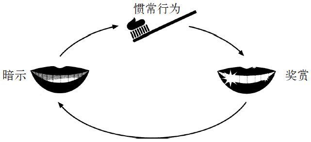
宣传活动启动之后第一周，反响平淡；第二周，还是如此；第三周，消费者对产品的需求暴涨。“白速得”的订单如此之多，以至于该公司的生产跟不上订货的速度。三年后，该产品走向国际，霍普金斯制作了西班牙语、德语和中文的广告。10年间，“白速得”成为世界上最畅销的产品之一，并占据美国最畅销牙膏的宝座长达三十几年之久。
在“白速得”出现之前，只有7%的美国人在药箱中备有一管牙膏。霍普金斯的广告风靡全美10年之后，这个数字攀升到了65%。到了“二战”的最后阶段，军队对新兵的牙齿不再那么担心，因为许多士兵每天都在刷牙。
“‘白速得’为我赚了100万美元。”霍普金斯在该产品上架若干年之后写道。他说，其关键就在于他已经“了解到正确的人类心理”。这种心理的基础是两条基本规律：
第一，找出一种简单又明显的暗示。
第二，清楚地说明有哪些奖赏。
霍普金斯认为，如果你准确把握了这些要素，就会产生魔法般的效果。看看“白速得”吧。他发现了一种暗示——垢膜，以及一个奖赏——漂亮的牙齿，这使千百万人开始了每天的固定活动——刷牙。即使在今天，霍普金斯的两条规律仍是营销学教科书上的主要内容，也是千百万广告宣传的基本原理。
根据那些相同的原则，另外有上千种习惯被创造了出来。人们往往没有意识到他们是多么严格地遵守着霍普金斯的公式。比方说，对成功开始新锻炼习惯的人群的研究表明，如果他们选择一个具体的暗示，例如下班后尽快跑回家；以及一个清晰的奖赏，例如一杯啤酒或者看一个晚上的电视而不必心怀内疚，他们会更有可能坚持锻炼。关于节食减肥的研究表明，创造新的饮食习惯需要一个预设暗示，例如事先设定的菜单，以及为坚持节食的人们提供的简单奖赏。
“广告在一些条件的操纵下上升到科学层次的时候到了。”霍普金斯写道，“广告，一度曾是一种赌博行为，因此也已经变成了在可操纵的范围之内最保险的商业冒险形式之一。”
这口气可真不小。然而，事实表明，霍普金斯的两条规律是不够的。要创造一种习惯，还必须满足第三条规律。这条规律是如此微小，以至于霍普金斯本人在依赖这条规律的同时没有意识到它的存在。它为所有现象提供了解释：从为什么人如此难以对一盒甜甜圈视而不见，到晨跑为何变成几乎毫不费力的惯常行为。
几个科学家和宝洁公司的营销主管们在一个小小的、没有窗户的房间里，围坐在一张杂乱的桌子旁边，读着一篇关于一个拥有9只猫的女人的访问记录。这时候，他们中的一个人终于说出了在场每个人的想法：“如果我们被解雇了，到底会发生什么样的状况？保安会来把我们弄出去，还是我们事先会接到某种警告？”
公司曾经的明日之星、团队的头头德瑞克·斯廷森回应道：“我不知道。”他的头发乱糟糟的，眼睛充满倦意：“我没想过事情会变得这么糟糕。他们告诉我执行这个项目会是晋升的好机会。”
那是1996年，尽管克劳德·霍普金斯如上文那样断言，但这个坐在桌边的小组却发现销售程序变得完全不符合科学规律。他们的雇主是世界上最大的消费品公司之一——宝洁，旗下有品客薯片、玉兰油、邦蒂纸巾、封面女孩化妆品、黎明洗涤剂、多丽柔软剂、金霸王电池以及其他几十个品牌。宝洁收集的数据比世界上其他任何商家都要多，并根据复杂的统计方法来制定营销宣传方案。该公司在发掘产品销售方法方面，是令人难以置信的行家里手。单就衣物洗涤用品市场而言，美国每两堆送洗的衣服中，就有一堆是使用宝洁的产品。每年，它的收入高达350亿美元。
然而，受委托为宝洁最有前景的新产品之一作广告宣传设计的斯廷森团队，却即将遭遇失败。公司花费百万美元研发了一种可以消除几乎所有纤维制品上异味的喷雾剂。而在那间小小的没有窗户的房间里的研究人员，却想不出让人们购买它的办法。
大约三年前，宝洁公司的一名药剂师在实验室里试验一种被称为HPBCD（或者羟丙基β环糊精）的物质时发明了这种喷雾剂。这个药剂师是一位烟民，他的衣服闻起来总是像一个烟灰缸。一天，他在试验HPBCD之后回了家，在门口迎接他的是他的妻子。
她问他：“你戒烟了吗？”
“没有啊。”他说，脑子里都是问号。多年来，她总是烦他，让他戒烟。这会儿妻子说的这句话就像某种逆向心理圈套。
她说：“你闻起来好像没有吸烟，一点儿也没有。”
第二天，他回到了实验室，开始用HPBCD和各种气味进行试验。很快，他就有了几百个装着纤维的小罐子，那里头的纤维闻起来就像淋湿的狗、雪茄、汗湿了的袜子、发霉的衬衫和脏毛巾。当他把HPBCD放入水中并喷在纤维样品上时，那些气味被化学分子吸收了。气雾干了之后，那些气味就消失了。
当这个药剂师向宝洁的主管们解释他的发现时，主管们欣喜若狂。多年来，市场调查显示，消费者一直在呼唤一种能够去除异味的产品面世——不是掩盖异味，而是把异味全部消除。当一队调研人员采访客户的时候，他们发现，其中许多人在酒吧或派对一夜之后会把衬衫或休闲裤放在房子外。“回到家的时候，我的衣服闻起来一股烟味，但是我不想每次外出都花钱干洗。”一位女性说道。
宝洁公司一嗅到这个商机，就启动了一个最高机密级别的项目，要将HPBCD变成一种可行的产品。他们花了几百万美元完善配方，最后发明了一种无色无味、可以驱除几乎所有难闻气味的液体。这种喷雾剂背后的科技是如此先进，连美国国家航空航天局（NASA）最后都用它来清除从太空回来的航天飞机的内壁。它最大的好处就在于生产成本低，无污点残留，且能使任何发臭的沙发、旧外套或脏污的汽车内壁闻起来舒服，无气味。这个项目是一场大赌博，但是宝洁公司已经准备好要赚个几十亿，如果他们能想出正确的营销宣传方案。
他们决定给它取名为“纺必适”（Febreze），并让斯廷森，这个31岁，有数学和心理学背景的青年才俊来带领该团队。斯廷森个头高高的，长相英俊，下巴结实，声音温和，饮食品位很高。（“与其让我的孩子们去吃麦当劳的东西，我宁愿他们吸大麻。”他曾这么对一个同事说过。）在加入宝洁之前，他在华尔街度过了5年时间，为选股建立数学模型。在他搬到辛辛那提，也就是宝洁总部所在地时，他被派去帮助运营重要的业务，其中有邦氏衣物柔顺剂香衣片和多丽烘干纸。但是纺必适却不一样，这是开发出一类全新产品的机会，推出消费者以前从来都没有买过的东西。斯廷森团队中的所有人都要搞清楚怎样才能让使用纺必适变成一种习惯，从而使这种产品热销。这难度有多大呢？
斯廷森和他的同事们决定向一些试点市场，例如凤凰城、盐湖城和博伊西投放纺必适。他们飞过去发放样品，向人们询问是否可以对他们进行家访。在两个月里，他们拜访了几百户人家。在拜访在凤凰城的一位公园管理员的时候，他们取得了第一个大的突破性进展。这位管理员已经20多岁了，还是一个人独自生活。她的工作是诱捕那些在荒原外迷路的动物。她抓过土狼、浣熊、美洲狮。有时还有臭鼬，很多很多的臭鼬。在抓到臭鼬的时候，她经常被喷一身。
在斯廷森以及他的同事一起坐在她的客厅里时，这位管理员对他们说：“我还单身，我想找个男人，生几个孩子。我有好多场约会。你懂我的意思吗？我觉得我有吸引力、聪明而且是一个好对象。”
但是她却情路坎坷。她解释说，因为她生活里每一件东西闻起来都有一股臭鼬味。她的房子、卡车、衣服、靴子、双手、窗帘甚至她的床，都是这样。她试验了所有的解决方法。她买过特殊香皂和洗发露，点过香薰蜡烛，还用过昂贵的地毯洗涤机。没有一个奏效。
“在我赴约的时候，我身上会带着一点点臭鼬味，然后我开始满脑子都是这个怪味。”她告诉他们说，“我开始想，他闻得到这味道吗？如果我带他回家，他会不会想离开呢？
“去年我和一个非常好的男人有过4场约会。我真的非常喜欢那个人，一直都想约他到我这里来。终于，他来我家了，我想一切进展都真的非常顺利。然而第二天，他说他想要‘透透气’。他的说法真的很礼貌，而我一直在想，是那个怪味在作祟吗？”
“哦，我很高兴你有机会试一试纺必适。”斯廷森说。
“你觉得怎么样？”
她望着他，眼中含泪。
“我想对你说声谢谢，”她说，“这个喷雾剂改变了我的生活。”
她收到纺必适样品之后回了家，用它喷了她的沙发、窗帘、小地毯、床罩、牛仔裤、制服，还有她的车。那一罐用完了，于是她又拿了一罐，喷到其他的所有物件上。
她说：“我让所有的朋友都到我家来，他们再也闻不到怪味了。臭鼬走了。”
她一直在哭，哭得那么凶，斯廷森的一个同事只好拍着她的肩膀。“太感谢你们了，”她说道，“我感觉好自在。谢谢。这个产品很重要。”
斯廷森嗅着她客厅里的空气，他闻不到任何气味。他想，这产品要让我们赚一笔了。
斯廷森和他的团队回到了宝洁总部，开始检查他们即将开展的营销计划。他们认为，纺必适的销售关键，就是传达那位公园管理员感受到的自在感。他们将纺必适定位为能让人们摆脱尴尬气味的东西。他们都很熟悉克劳德·霍普金斯的那些规律，以及它们在现代的具体形式，这些在商学院的教科书里都找得到。他们想让这些广告保持简单的风格：找出一种简单又明显的暗示，清楚地说明有哪些奖赏。
他们设计了两组电视广告。第一组表现的是一位女性在谈关于餐厅吸烟区的事情。每次她在那里用餐，外套都会沾上一股烟味。一个朋友告诉她，如果使用纺必适，她就能赶走烟味。其中暗示就是：烟味。奖赏是：清除衣服上的烟味。第二组描述了一位女性在为她那条经常坐到沙发上的狗“苏菲”烦恼。“苏菲闻起来总有一股它自己的味道”，她说，但是有了纺必适，“现在我的家具不再有‘苏菲’味了”。其中暗示就是：宠物气味。7 000万拥有宠物的家庭都很熟悉这种气味。奖赏是：房子闻起来不再像个狗窝了。
1996年，斯廷森和他的同事开始在相同的试点城市投放广告。他们分发样品，向邮箱投递广告，付钱让杂货商在收银机旁堆起纺必适。然后他们坐观其成，预想着要怎么花他们的奖金。
一周过去了，然后是两周、一个月、两个月。销售量开始时很小，然后，变得更小。公司慌了，派研究人员到商店里去看发生了什么情况。货架上摆满了没有被碰过的纺必适罐子。他们开始走访曾收到过免费样品的家庭主妇们。
“哦，对了！”其中一个主妇对宝洁的一名研究人员说道，“那个喷雾剂，我记得。我们来看看。”她在厨房水槽下面的橱柜里翻着。“我用过一次，但之后就忘记了它的存在。我想应该是放回这里还是什么别的地方了。”她站起身，“可能在壁橱里？”她走过去，拨开几把扫帚，“对了，它在这里！在后面！看到了吗？它几乎还是满的。你们想把它要回去吗？”
纺必适滞销了。
这对于斯廷森来说，简直是一场灾难。宝洁其他部门的高管对手们正想利用他的这次失败打击他。他听说他们正在游说上头封杀纺必适，将他派回尼基·克拉克护发产品部门，这几乎相当于流放去西伯利亚。
宝洁公司的一个分区总裁召开了一次紧急会议，宣布在董事会问责之前，他们将采取行动减少纺必适带来的损失。这时斯廷森的上司站了起来，激动地辩解说：“我们还有希望扭转这一切。至少，也让那帮博士去调查一下到底发生了什么事。”实际上，宝洁公司已从斯坦福大学、卡内基梅隆大学以及其他地方请来了一批消费心理学的专家。分区总裁最后也同意再给这个产品一些时间。
因此一批新研究人员加入了斯廷森的团队，开始进行更多的调查访问。在访问凤凰城郊外一位女士的家后，他们找到了一丝端倪。他们在进屋前就闻到她家养的9只猫的味道。但是，屋里环境却很整洁有序。那位女士解释说自己有点洁癖。她每天都用吸尘器清扫。因为风会把灰尘吹进来，所以她不喜欢开窗。当斯廷森和调查员走进猫常住的客厅时，那股异味浓得让一个调查员都要吐了。
“你是怎么处理这些猫的异味的？”其中一个调查员问她。
“一般来说没什么问题。”她说。
“你多久会察觉到有异味出现了？”
“哦，大概一个月吧。”她回答道。
调查人员们听后面面相觑。
“那你现在闻到有异味吗？”一个调查员问。
她回答说：“没有啊。”
同样的情况也发生在他们访问的其他有异味的家庭里。人们很少能察觉生活中的异味。如果你和9只猫生活在一起，那么你对它们身上的气味就会变得麻木。如果你吸烟，烟味会严重伤害你的嗅觉，你以后会闻不到烟味。气味是一种很奇特的东西，即使最浓重的气味，在长期接触下也会变淡。斯廷森弄清楚了很少有人购买纺必适的原因：产品身上的暗示（也就是促使人们日常使用产品的因素）无法被最需要它的人察觉。这些人偏偏经常闻不到异味，也就没法形成使用习惯。于是，纺必适被束之高阁。本来客厅的异味已经提醒主人要喷除臭剂了，但最需要用这东西的人却没有闻到异味。
斯廷森的团队返回总部，聚集在无窗的会议室，再次分析饲养9只猫的女士的访谈记录。心理学家问斯廷森，如果他被开除了会怎么做。斯廷森用手撑着头，好像没有听见心理学家的问题，他一心只想着如果他没法将纺必适卖给饲养9只猫的女士，那他还能卖给谁？如果根本没有暗示来触发消费者对产品的使用，而且如果最需要这种产品的消费者并不能看出产品带来的奖赏，那又怎么能形成使用它的习惯？
剑桥大学的神经科学教授沃夫曼·舒尔茨的实验室完全谈不上整洁，他的同事将他的桌子形容为黑洞——文件在这儿丢了就永远找不回来了，也说这里像一个微生物常年恣意疯长的培养皿。舒尔茨教授偶尔清洁一下时，也不用任何喷剂或者清洁剂，仅仅是弄湿纸巾使劲擦。如果他衣服有股烟味儿或猫毛的味道，他也不会注意到，或者说他根本不在意。
然而，舒尔茨教授进行的20多年的实验，却极大地更新了我们对暗示、奖赏和习惯之间相互作用的认识。他解释了为什么一些暗示和奖赏要比其他的组合拥有更大的影响力，并提供了一张科学的路线图，说明了为什么白速得牙膏广受欢迎，节食者和运动爱好者是怎么快速改变习惯的，以及纺必适要畅销需要满足的条件。
在20世纪80年代，舒尔茨参加研究了猴子的大脑。他们让猴子执行拉动手杆或钩子等任务来研究脑功能活动。他们的研究目标是搞清楚大脑的哪些部分与新学到的动作有关。
舒尔茨教授告诉我：“有一天，我发现了一件很有有趣的事。”他出生在德国，说英语像带皇家口音的终结者阿诺德·施瓦辛格。“我们观察的一些猴子喜欢苹果汁，另一些喜欢葡萄汁，于是我就想，这些猴子的脑袋里到底发生了什么呢？为什么不同的奖赏会对大脑有不同的影响？”
舒尔茨教授开始进行一系列实验，解读在神经化学水平上“奖赏”这个要素是如何作用的。随着技术的进步，在90年代，他拿到了和麻省理工大学研究人员使用的相似的实验器械。比起老鼠，他对猴子的实验更感兴趣。比如说他为实验饲养的名叫胡里奥的猴子，重8磅[2]，长着浅棕色眼睛。他将一根很细的电极植入胡里奥的大脑，以便观察它脑内发生的神经元活动。
一天，舒尔茨教授让胡里奥坐在暗室的椅子上，并打开了电脑显示器。胡里奥的任务是当屏幕显示细小的黄色螺旋、红色波形线条和蓝色线条这些彩色图案时，就拉动拉杆，然后，从连着天花板的导管里就会流出一滴黑莓汁，滴到它的嘴里。
胡里奥很喜欢喝黑莓汁。
开始时，胡里奥对屏幕显示的变化表现得兴致不高，多数时间都在尝试爬出椅子。但它喝到黑莓汁几次后，就对屏幕显示高度注意起来。随着多次重复，它开始明白屏幕上的图案是某种惯常动作（拉动拉杆）的暗示，而做了这个动作以后就可以获得奖赏（黑莓汁），于是开始像激光光束一样聚精会神地盯着屏幕，一动不动。黄色螺旋出现时，它伸手拉动拉杆；蓝色线条闪现时，它又去拉动拉杆。当黑莓汁滴下来时，胡里奥就心满意足地舔着嘴唇。
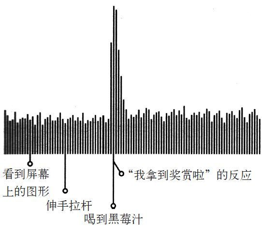
当舒尔茨观察胡里奥大脑活动时，他发现它脑内形成了一个模式。每当胡里奥得到奖赏时，它脑内活动就会出现一个尖峰脉冲，显示它正感到快乐。一份神经活动的文字记录表明，这个模式其实就像猴子的大脑在欢呼：我拿到奖赏啦！舒尔茨让胡里奥反复进行同样的实验，记录下每次的神经反应。每当胡里奥喝到黑莓汁时，这个“我拿到奖赏啦”的模式就会在与植入猴脑的探测器相连的电脑上出现。久而久之，胡里奥的行为从神经学角度来说就形成了一种习惯。
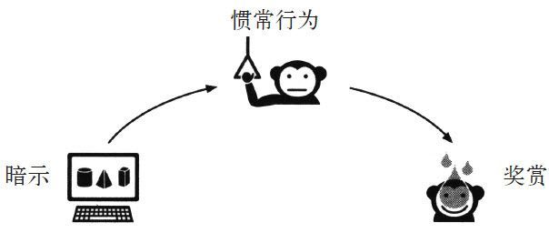
然而，舒尔茨觉得最有趣的是，实验继续下去会有什么变化。当猴子对这行为越来越熟练，习惯更根深蒂固时，胡里奥的大脑就开始预期黑莓汁的出现。只要它看到屏幕上的图案，还没等尝到黑莓汁，探测器就已探测到“我拿到奖赏啦”的模式。
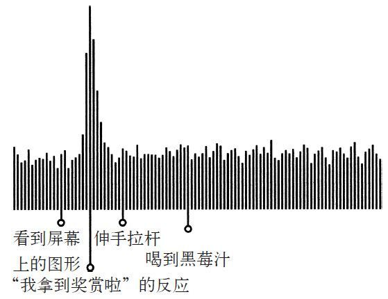
换言之，屏幕上的图案已不仅是拉动拉杆的暗示，而且也是引起猴脑内愉悦反应的暗示。胡里奥在看到屏幕上黄色螺旋和红色波形线条时，就开始期待得到奖赏。然后舒尔茨对实验作了调整。之前，胡里奥在拉动拉杆后就马上能喝到黑莓汁。现在，有时即使它操作正确，也得不到黑莓汁，或者要稍微晚点儿才能喝到黑莓汁，又或者流下的黑莓汁掺了水，只有原先的一半甜。
当黑莓汁没有出现，或者晚出现，或者被稀释时，胡里奥就会生气，发出愤怒的声音，或者变得没精打采。舒尔茨在胡里奥的大脑内发现了一种新模式：渴求。每次胡里奥预期会出现黑莓汁，但却没有喝到时，它的大脑里就会突然出现一种与欲望和失望有关的神经模式。他看到暗示，就会开始兴高采烈地预期黑莓汁。但是如果黑莓汁没出现，这种欢欣就会变成渴求，要是得不到满足，胡里奥就会变得生气或沮丧。
别的实验室的研究人员也发现了类似的模式。其他猴子被训练成只要在屏幕上看见图形，就会预期果汁的出现。然后，研究人员尝试让它们分心。他们打开了实验室的门，这样猴子可以出去和它们的朋友玩耍。研究人员在一个角落里放了食物，如果猴子放弃做实验，它们就可以吃这些食物。
这种分心的做法对没有形成强烈习惯的猴子起了作用。它们从椅子里滑了下来，头也不回地出了房间。它们还没有学会渴求果汁。不过，一旦猴子养成了这一习惯，也就是说大脑开始预期奖赏时，分心的做法就没有诱惑力了。猴子会一直坐在那儿，看着屏幕，一次又一次地拉动拉杆，对周围提供的食物或者出去玩的机会视而不见。这种预期以及渴求感非常强大，让猴子牢牢地坐在了屏幕前。赌徒在输掉赢来的钱之后会玩老虎机很久也是这个道理。
这解释了为什么习惯如此强大：它们能够创造出神经渴求。在大部分时间里，这些渴求是逐渐产生的，而我们确实没有意识到它们的存在，所以往往看不到它们的影响。
不过，我们把暗示和特定的奖赏关联起来，大脑中就出现了潜意识的渴求，这让习惯回路继续运转。比如，美国康奈尔大学的一位研究人员就发现，人对食物和气味的渴求非常强，如果注意一下辛那邦连锁糕饼店在购物商城里都在什么位置，你就会意识到这种渴求影响了我们的行为。大多数食品店都把店铺设在美食街这种地方，但是辛那邦却让自己的店远离其他食品店，原因是辛那邦的高管想让辛那邦肉桂卷的香味畅通无阻地飘过走廊，在角落挥之不散，这样消费者就会下意识地渴求肉桂卷。等到消费者转弯看到辛那邦糕饼店时，大脑中的这种渴求就会像怪兽一样咆哮，他会不假思索地掏钱包。因为渴求感的出现，这一习惯回路开始工作。
舒尔茨跟我说：“我们脑子里没有被编排进让我们看到一盒甜甜圈就禁不住想吃的东西，不过，一旦大脑知道甜甜圈里有香甜的糖和其他碳水化合物，它就会对糖有非常高的预期。大脑会将我们推向盒子。然后，如果我们不吃甜甜圈，那就会感到失望。”
要弄清楚这一过程，想想胡里奥的习惯是怎么出现的。首先，他在屏幕上看到了图形：
慢慢地，胡里奥意识到图形的出现意味着是时候开始执行惯常行为，所以他伸手拉了拉杆：
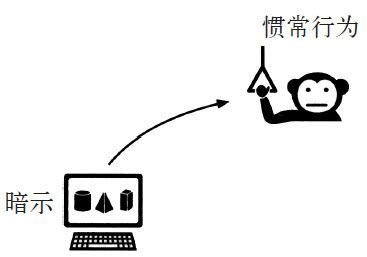
结果，胡里奥喝到了一滴黑莓汁。
这就是基本的学习过程。习惯只有在胡里奥看到暗示，开始渴求黑莓汁时才会出现。一旦渴求存在，胡里奥就会自动开始行动。他会按照习惯回路行事：
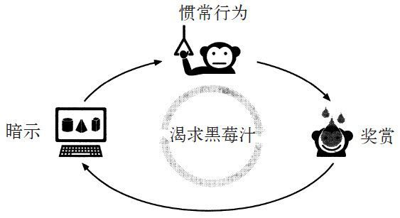
习惯是这样产生的：把暗示、惯常行为和奖赏拼在一起，然后培养一种渴求来驱动这一回路。吸烟就是这样。烟民看到暗示，比如一包万宝路，那么烟民的大脑就会开始预期尼古丁的味道。
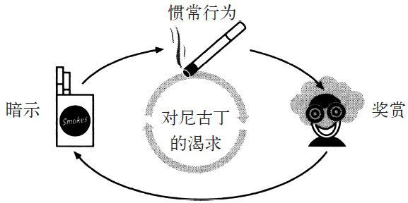
单是看到香烟就足够让大脑产生对尼古丁渴求的冲动。如果没抽到烟，这种渴求就会一直增长，直到烟民不经思考就拿起万宝路为止。
或者也可以看看电子邮件的例子，当电脑发出提示音，或者智能手机在收到新信息时震动，大脑就会开始预期打开电子邮件时产生的短暂分心。这种预期如果未能得到满足，就会变强，直到会上紧张兮兮的高管们在桌子下查看嗡嗡作响的黑莓手机，即便他们知道这可能不是什么重要信息，只是他们最近想象的球赛结果而已，但依然要去查看，以满足大脑的预期（换言之，如果有人关了震动，也就是消除了暗示，那么大家可能就会一直工作，而不会想去查看未读消息）。
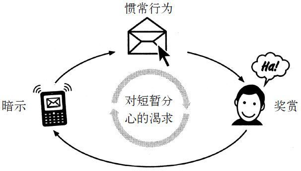
科学家研究了酗酒者、烟民、暴饮暴食者的大脑，随着这些人的渴求根深蒂固，科研人员测量了他们神经的变化，即大脑的结构和颅骨内的神经化学物质的流动。美国密歇根大学的两位研究人员在论文里说，那些习惯特别强时会让人出现上瘾一样的反应，于是“需求变成了让人沉溺其中的渴求”，这种变化让大脑进入了自动运转的状态，“甚至在丧失名誉、丢掉工作、无家可归和失去家人这样很强的抑制因素面前也无法停止”。
不过，这些渴求感并不能完全控制我们。在下一章中就会看到，这些机制能帮助我们抵御诱惑。但是要控制这种习惯，我们必须找出在背后驱动人们行为的渴求究竟是哪种。如果我们意识不到自己大脑会出现这种预期，就会成为那些被看不见的力量拖着，漫游进辛那邦糕饼店的消费者。
为了弄清楚“渴求”在创造习惯方面具有的力量，科研人员开始研究锻炼习惯是如何养成的。2002年，美国新墨西哥州州立大学的科研人员想找到一些人习惯性锻炼的原因。他们研究了266个人，这些人中的大部分每周至少运动三次。研究人员发现这些人中有很多人要么是一时兴起开始跑步或练举重的，要么是因为他们突然有了自由支配的时间，要么是想释放一下生活中不期而遇的压力。不过，他们持续运动以及这种运动变成习惯的原因，是他们开始渴求一种特殊的奖赏。
在其中一个研究组中，92%的参与者说他们习惯性锻炼是因为这让他们“感觉很好”，他们变得越来越期盼并渴求运动时产生的内啡肽和其他神经化学物质。在另一组人中，67%的人说锻炼让他们有一种“成就感”，他们从追踪自己的运动表现中渴求一种经常出现的胜利感。这种自我奖赏足够让体育活动变成一种习惯。
如果你想在每天早上起来晨跑，那你就得选择一个简单的暗示（比如吃早餐前绑好跑鞋的鞋带或者把运动衣放在床边）和一个清晰的奖赏（作为一天之中的奖励，可以通过记录你的运动英里数来获得成就感，或者在跑步中产生大量的内啡肽）。但是众多研究表明，暗示加上奖赏本身并不足以让新习惯长期持续。只有你的大脑开始预期奖赏，渴求内啡肽的分泌或成就感时，你才会自觉地在每天早上绑好跑鞋鞋带。而暗示除了能够触发惯常行为，还必须能够触发人对即将到来的奖赏的渴求。
在神经科学家沃夫曼·舒尔茨向我解释了渴求是如何出现的之后，我说：“我有一个问题想问你。我有一个两岁的孩子，我每次回家喂他吃饭，吃鸡块之类的东西时，我都会想也不想就过去自己吃一块。这是一种习惯，我现在越来越胖了，怎么会这样？”
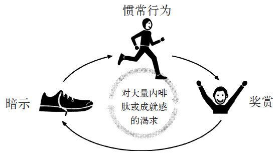
舒尔茨说：“大家都这样。”舒尔茨有三个孩子，现在都长大成人了。在这些孩子小的时候，舒尔茨也会不假思考地就去吃他们的东西。他告诉我说：“在某种程度上，我们都跟猴子一样。当我们看到桌子上的鸡肉或者炸薯条时，大脑就会开始预期这种食物，甚至你不觉得饿，你也会有这种预期。我们的大脑对它们有渴求。坦白地说，我甚至都不喜欢这些东西，但是突然间，我很难抵御这种吃的冲动。我一吃下去，渴求感得到满足，我就突然有了一阵愉悦感。这有些让人丢脸，但习惯就是这样工作的。”
他又说：“我觉得我应该感到欣慰，因为我让我养成了好习惯。我努力工作是因为我预期自己能从科学发现中得到自豪感，我锻炼是因为我预期在结束之后能够感觉很好。我希望我能够选择，而且选得更好。”
在忍受着浓郁的异味，拜访完养了9只猫的女人后，德瑞克·斯廷森的宝洁团队开始四处寻找常规渠道以求得帮助。他们开始读沃夫曼·舒尔茨的实验报告，还请哈佛商学院的教授来主持纺必适宣传活动的心理测试。他们挨个拜访顾客，寻找可以让他们弄清楚为什么纺必适无法融入消费者日常生活的线索。
有一天，他们拜访了住在斯科特斯戴尔附近郊区的一位女士。这位女士40多岁，有4个孩子。她的房子很干净，不过看得出她还没到强迫症般有洁癖的程度。让研究人员大感意外的是，她非常喜欢纺必适。
她跟大家说：“我每天都用啊。”
斯廷森问：“真的吗？”这儿看上去不像是有异味问题的那种房子。这里没有宠物，没有人吸烟。
“你怎么用的？你想去掉的是什么味道？”
这位女士回答道：“我不是用它来去除某种味道，我的意思是，你懂的，虽然我家有几个男孩，他们现在正值青春期，如果我不清理他们的房间，闻起来就会像更衣室。但是我用它并不是为了这个。我就常规地用一用，每次打扫干净屋子我就喷几下。让房间闻起来不错，以此作为最后的扫尾工作是不错的做法。”
调研人员问能否看着她打扫屋子，她同意了。她进了卧室，整理了自己的床铺，拍了拍枕头，紧了紧床单的几个角，然后拿起纺必适的罐子，开始在平整的被子上喷。然后她到客厅用吸尘器打扫了一下，捡起孩子们的鞋，径直走向咖啡桌，把纺必适喷到了刚刚清理的地毯上。她说：“这很好，你明白吧，我在打扫完房间后，喷一喷这个就像小小地庆祝了一下。”按照她使用纺必适的频率，斯廷森估计她每两周就要用完一罐。
宝洁多年来搜集了数千份人们打扫自己家的录像。调研人员回到辛辛那提时，一些人花了一整晚的时间看这些录像带。第二天早上，其中一位研究人员要纺必适团队和他一起去会议室。他播了一盘录像带，里面有一个26岁的带着三个孩子的女人，她在整理床铺。她铺平了床单，调整了一下枕头。然后，她笑着离开了房间。
这位研究人员兴奋地问：“你们看到了吗？”
他又放了另一段画面，画面上一个年轻的浅黑色头发的女人铺开一张五颜六色的床单，整理好了枕头，然后笑着看着自己的杰作。这位研究人员说：“又出现了！”下一段画面里一个穿着运动衣的女人在清扫厨房，擦灶台，然后轻松悠闲地伸展了下身体。
此时，这位研究人员看着他的同事们问道：“你们看到了吗？
“他们每一个人在打扫完之后都在做放松或开心的事，我们可以以此为基础！如果把纺必适塑造成在打扫卫生这种常规活动结束后要使用的东西，而不是在打扫卫生开始时使用的东西，会怎么样？如果把使用它变成打扫卫生中有趣的那部分会怎么样？”
斯廷森的团队作了一项测试。之前，产品的广告都在突出产品除臭的功能。这次，公司打印了新的标签，上面有开着的窗户和拂面的清风。产品配方里加了更多的香水，这样纺必适不仅可以除臭，还有自己独特的味道。电视广告中女人们在用该产品喷整理好的床铺和刚刚洗完的衣服。广告语以前是“将异味从衣服上赶走”，现在变成了“清除生活的异味”。
每一种改变都针对一种特定的日常暗示，有清洁房间、铺床、用吸尘器清洁地毯。在每一个场景中，纺必适都被设定为奖赏：产品的香味在清洁这一常规活动结束时出现。更重要的是，每一个广告都经过精心设计，要勾出一种渴求感，要让所有的东西在打扫卫生的常规活动结束时，都能在看上去光洁亮丽的同时有好味道。本来设计用来去除异味的产品，现在变成了增添味道的东西——这种产品不是用来去除脏衣物的所有味道，而是一种在所有东西都已经打扫干净之后，收尾时使用的空气清新剂。
在新广告开始播出、重新设计的罐装产品分发出去后，调研人员重新上门拜访消费者，他们发现有些家庭主妇开始预期，或者说渴求纺必适的味道。有一位女士说当她那一瓶用完时，她就把稀释的香水喷到衣服上。她告诉调研人员：“现在，如果最后我闻不到香味，我会觉得东西似乎没有洗干净。”
斯廷森告诉我说：“之前那位有臭鼬问题的公园管理员误导了我们，她让我们以为只要能证明纺必适可以解决异味的问题，它就会热卖。但是谁会承认自己家里臭烘烘的？
“我们的角度完全错了。没有人会在乎是否能完全除掉味道。从另一方面来看，很多人在花了30分钟打扫卫生后,都会渴求出现好闻的味道。”
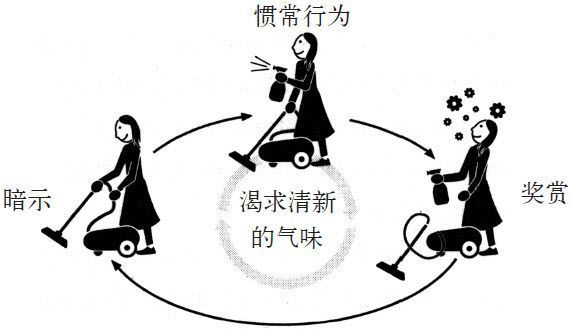
1998年夏，纺必适重新上市。两个月内，销售额翻倍。一年内，顾客在这种产品上已经花费了2.3亿美元。从那时起，纺必适衍生出很多其他产品，有空气清新剂、熏香蜡烛、洗衣液以及厨房用的喷雾剂，所有这些产品每年的销售额超过10亿美元。最后，宝洁集团开始提示消费者，说纺必适不仅可以让味道更好闻，还可以去除异味。斯廷森后来得到升职，他的团队也拿到了奖金。这个营销方式奏效了，他们找到了简单而且明显的暗示，也清晰地定义出了习惯回路中的奖赏。
他们创造了渴求感，让消费者产生了所有东西在有亮闪闪的外观的同时，也有好闻的味道的欲望，这让纺必适在市场上大卖。这种渴求是创造新习惯方法的基本要素，白速得牙膏的广告人克劳德·霍普金斯从来都没有发现这一点。
霍普金斯在生命最后的几年里开始作巡回演讲。他的“科学化广告法则”的主题演讲吸引了成千上万的人，在演讲时，他经常将自己和托马斯·爱迪生以及乔治·华盛顿对比，并侃侃而谈，大胆地预测未来（最喜欢谈的是飞在空中的汽车）。但是他从来没有提到过大脑的渴求或习惯回路的神经基础。要不是麻省理工学院的科学家和沃夫曼·舒尔茨他们的实验，其中的奥秘也许再过70年才会被发现。
那么霍普金斯是如何在没有这些知识的帮助下创造了刷牙这种强烈习惯的？
实际上，虽然当时没有人知道其中的秘密，但霍普金斯利用的正是麻省理工学院和舒尔茨实验室最终发现的法则。
霍普金斯在白速得牙膏上的成功并不像他在回忆录中记载的那样简单。虽然他自夸说在牙齿垢膜中发现了神奇的暗示，并夸耀说他是第一个向消费者提供美丽牙齿这一清晰奖赏的人，但其实霍普金斯并不是这些策略的原创者。
想想杂志和报纸上其他牙膏的广告就明白了，那时候霍普金斯根本还不知道白速得牙膏的存在。
比如谢菲尔德博士的泡沫牙膏广告里就宣称“这种配方的成分特别为防止牙垢在齿颈周围聚集而设计，可以清除牙齿的污垢层”，而白速得牙膏是在这之后才出现的。
霍普金斯在读牙科教科书时看到一则广告：“你牙齿白色的珐琅质只是被一层垢膜隐藏了，散拟妥牙膏能很快去除垢膜，迅速恢复你牙齿原来的洁白亮丽。”
还有一则广告声称：“甜美的微笑是否有魅力取决于你牙齿有多美丽，美丽如绸缎般光滑的牙齿，往往是漂亮女孩魅力四射的秘密，请快使用S.S.美白牙膏吧！”
很多其他广告也都用了和白速得牙膏相似的语言，而这都在霍普金斯加入之前。他们的广告都承诺能够去除牙齿的垢膜，并能提供美丽洁白的牙齿这种奖赏，但这些广告都没有奏效。
而霍普金斯一开始他的推广活动，白速得牙膏的销量立刻暴增。为什么白速得牙膏与众不同呢？
因为霍普金斯成功背后的驱动因素与让猴子胡里奥去拉拉杆，让家庭主妇在刚铺好的床上喷纺必适的因素相同——白速得牙膏创造了一种渴求感。
霍普金斯在自传中没有谈论白速得牙膏的成分，而牙膏的专利申请以及公司的记录上列出的配方都展示了一些有趣的东西：与其他同时期的牙膏不同，白速得牙膏里面加入了柠檬酸，还有薄荷油以及其他化学物质。白速得牙膏的发明者用这些成分制造出的牙膏味道清新，还有另一种预料之外的效果，那就是能够让舌头和牙龈感觉到凉丝丝的刺激感。
在白速得牙膏雄霸市场之后，与之竞争的公司的研究人员立刻匆匆忙忙地寻找其中的原因。他们发现顾客说如果不记得用白速得牙膏，他们就觉得自己做错了事，因为他们嘴里没有那种凉丝丝的刺激感。他们预期、渴求这种微小的刺激感。如果没有这种感觉，他们就觉得口腔不干净。
克劳德·霍普金斯并不是把美丽的牙齿作为卖点，而是把那种刺激感当成了卖点。一旦大家都渴求那种凉丝丝的刺激感，一旦他们将这种感觉等同于刷干净，那么刷牙就变成了一种习惯。
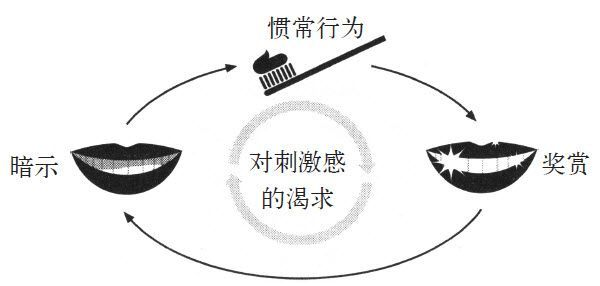
在其他公司真正发现霍普金斯的卖点是什么后，他们开始模仿。在几十年内，几乎所有的牙膏都加入了可以让牙龈感觉到刺激的油与化学物质。白速得牙膏变成了最畅销的牙膏。甚至在今天，几乎所有的牙膏都含有这些添加剂，而这些添加剂唯一的功能就是让你的嘴巴在刷牙之后有刺激感。
欧乐–B和佳洁士儿童牙膏的品牌经理特蕾西·辛克莱尔跟我说：“消费者需要一些信号告诉他们这种产品是有效的，我们可以随意调整牙膏的口感，可以是蓝莓味、绿茶味，而只要有那种凉丝丝的刺激感，大家就觉得牙齿刷干净了。这种刺激感并不会让牙膏的效果更好，但可以说服大家牙膏有效。”
任何人都可以用这个基本的方法来创造自己的习惯。想多多锻炼？选择一个暗示（比如每次一醒来就去健身房），然后找一个奖赏（比如每次健身后来一杯奶昔）。想想奶昔或者你会感觉到身体里涌出的内啡肽。让自己去预期奖赏的出现，最终，这种渴求会让你每天更想去健身。
想打造新的饮食习惯吗？与美国国家体重控制登记处合作的科研人员进行了一个有6 000人参与的项目，他们减掉的体重都超过了30磅。在这个项目中，科研人员检查了节食成功者的习惯，发现他们中78%的人每天都吃早餐，这是一天中变成暗示的一餐。最成功的节食者为自己的食谱构想了一个特定的奖赏，比如一件想穿的比基尼或者他们每天站在秤上看到体重下降带来的自豪感，这种奖赏是他们选择的，也是他们真心想要的。当诱惑出现时，他们的注意力都集中在对奖赏的渴求上，并将这种渴求变成了一种轻度的沉迷。研究人员发现他们对奖赏的渴求将诱惑挤出了食谱，这种渴求驱动着他们的习惯回路。
对公司来说，弄清楚渴求背后的科学是革命性的。我们每天都有很多日常活动要做，但从来都没有变成习惯。我们应该注意盐的摄入量，应该多喝水，多吃蔬菜，少吃肉，应该摄入维生素，用防晒霜（关于皮肤的这一项其实很明显，每天早上在脸上抹些防晒霜，可以大大降低患皮肤癌的概率）。不过，在人人都刷牙的时候，不到10%的美国人每天用防晒霜。为什么？
因为不存在将用防晒霜变成日常习惯的渴求。有些公司尝试通过给防晒霜加入对皮肤的刺激感，或者别的什么让消费者知道他们已经把防晒霜抹上去了的东西，来解决这个问题。他们希望引发的预期与受刺激的嘴巴提醒我们刷牙的渴求感相同。他们已经在数百种其他产品中用了类似的招数。
品牌经理辛克莱尔说：“泡沫是一种巨大的奖赏，洗澡用的香波没有泡沫，但是我们加入了起泡的化学物质，因为大家每次都预期自己在洗头发时会有泡沫。洗衣剂也是同样的道理，还有牙膏，现在所有的公司都在牙膏里加入了月桂醇聚醚硫酸酯钠，目的就是增加牙膏的泡泡。这东西不会让牙齿更干净，但是使用的人在嘴四周出现一堆泡沫时会有更好的感觉。一旦顾客开始预期牙膏会出现泡沫，习惯就形成了。”
是渴求在驱动着习惯。找到触发渴求的方式让创造新习惯变得更容易。现在是这样，100年之前也是如此。每天晚上，数百万人在刷牙，就是为了获得那种刺激感。每天早上，数百万人穿上跑鞋，就是想获得他们渴求的大量内啡肽。等他们回到家，打扫了厨房或卧室后，有些人又会喷点儿纺必适来满足自己对那种气味的渴求。